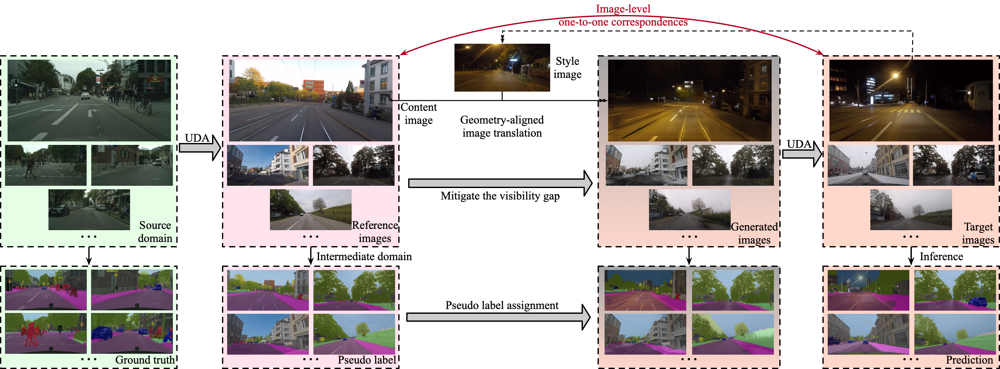

1The Hong Kong University of Science and Technology
2Trinity College Dublin
3VinAI Research
IEEE/RSJ International Conference on Intelligent Robots and Systems (IROS) 2023

Framework Overview of CompUDA.
Abstract
In autonomous driving, performing robust semantic segmentation under adverse weather conditions is a
long-standing challenge. Imperfect camera observations under adverse conditions result in images with reduced visibility, which hinders label annotation and semantic scene understanding based on these images. A common solution is to adopt semantic segmentation models trained in a source domain with ground truth labels and perform unsupervised domain adaptation (UDA) from the source domain to an unlabeled target domain that has adverse conditions. Due to imperfect visual observations in the target domain, such adaptation needs special treatment to achieve good performance. In this paper, we propose a new compositional unsupervised domain adaptation (CompUDA) method that disentangles the domain gap based on multiple factors including style, visibility, and image quality. The domain gaps caused by these individual factors can then be addressed separately by introducing the intermediate domains. Specifically, 1) to address the style gap, we perform source-to-intermediate domain adaptation and generate pseudo-labels for self-training in the target domain; 2) to address the visibility gap, we perform a geometry-aligned normal-to-adverse image translation and introduce a synthetic domain; 3) finally, to address the image quality gap between the synthetic and target domain, we perform a synthetic-to-real adaptation based on the generated pseudo-labels. Our compositional unsupervised domain adaptation can be used in conjunction with a wide variety of semantic segmentation methods and result in significant performance improvement across datasets.
@inproceedings{zheng2023compuda,
title={CompUDA: Compositional Unsupervised Domain Adaptation for Semantic Segmentation under Adverse Conditions},
author={Ziqiang Zheng and Yingshu Chen and Binh-Son Hua and Sai-Kit Yeung},
booktitle={2023 IEEE/RSJ International Conference on Intelligent Robots and Systems (IROS)},
year={2023}
organization={IEEE}
}